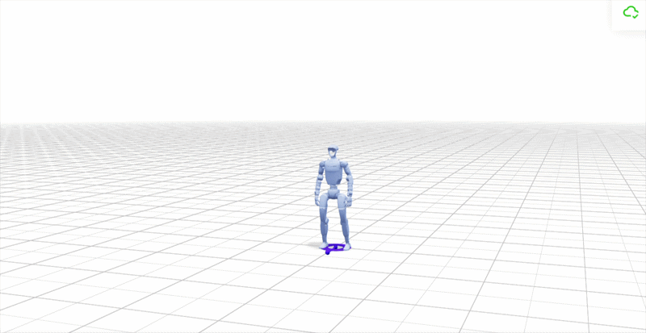
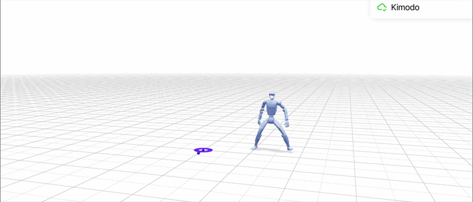
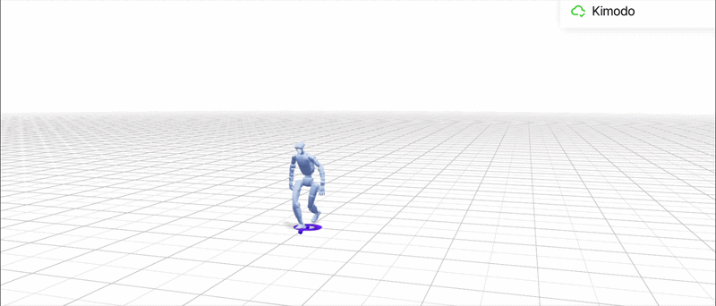
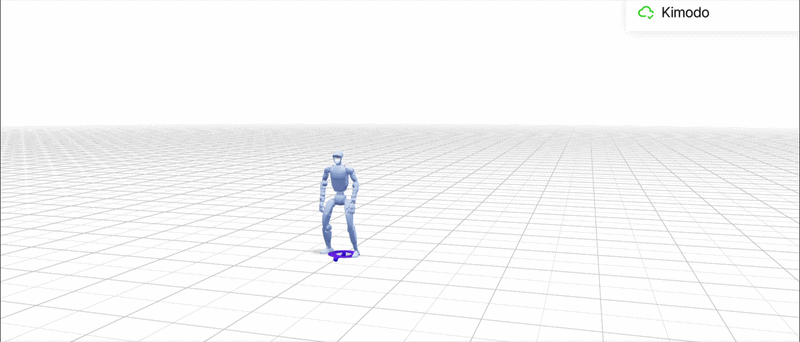
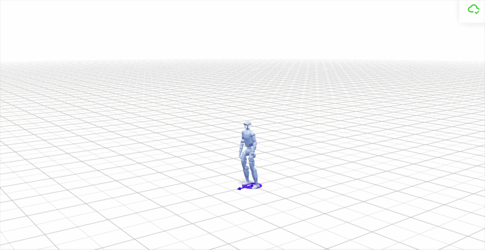

PRAGYAVLA INFERENCE
READY
PRAGYA · PRAGYAVLA
Language-Conditioned Motion-Token Planning for Humanoid Control
PragyaVLA conditions motion-token prediction on language, embodied state, and recent motion history; expands multi-step token prefixes; evaluates trajectory-level outcomes; and executes the selected motion under receding-horizon replanning.
Worked numerical trace. Probabilities, local scores, motion-state values, trajectory evaluations, ranks, and timing are generated example values for illustrating the inference interface. Replace them with logged checkpoint outputs and robot telemetry when reporting empirical PragyaVLA results.
Language instruction x
“Take two steps forward, shift to the left, then rotate to face right.”
K = 5motion-token proposals
H = 5planning horizon
3,905search states
3,125complete trajectories
 FORWARD
FORWARD
FORWARD
LEFT
LEFT
RIGHT TURN01 · Context + Motion Representation
From multimodal context to executable motion-token
Language, embodiment, and motion history form ht; the policy then proposes a discrete motion-token that is decoded with the current body state into continuous whole-body motion.
A · Context Construction
Multimodal context construction
Three independently encoded streams converge into a single policy state before motion-token inference.
💡 Intuition. Language specifies ordered subgoals, embodiment constrains realization, and motion history supplies temporal context. PragyaVLA conditions the next token on all three.
LANGUAGE STREAMx
FORWARD ×2
phase 01
phase 01
LEFT SHIFT
phase 02
phase 02
ROTATE RIGHT
phase 03
phase 03
EMBODIED STATEs_t
BASE VELOCITY0.04 m/s
YAW+1.2°
SUPPORTDS
MOTION HISTORYM_t
m[t−4] →→m[t−3] →←m[t−2] ←←m[t−1] ←↻m[t] ↻
POLICY CONTEXT
ht
instruction phaseFORWARD · STEP 1supportDShistory5 tokensconditioningx + s_t + M_t
MOTION-TOKEN POLICYpθ(m | h_t, τ<d)
∑ Formalization
ht=(x,st,Mt)
Mt=[mt−4,…,mt]
⚙ Runtime Interpretation
The three channels encode different information sources and converge only at the policy context used for prefix-conditioned motion-token prediction.
Technical takeawayThree modality-specific signals merge into a single temporally conditioned state before any next-token probability is evaluated.
runtime assembly
x · instruction+
st · DS / +1.2° / 0.04m·s⁻¹+
Mt · 5 tokens→
ht=(x,st,Mt)
ht ready
Representation bridge
ht→pθ(m|ht)→mj∈𝒱M→Dφ(mj,st)→at:t+T
B · Motion Representation + Decoding
Discrete vocabulary to continuous whole-body motion
Vocabulary structure, state-conditioned decoding, analytical motion traces, and physical displacement are shown together.
💡 Intuition. Motion-tokens are discrete model objects. A selected token becomes physical motion only after state-conditioned decoding.
FORWARD
m121m122m123…
LATERAL
m181m182m183m184m185
ROTATION
m241m242m243…
RECOVERY
m301m302…
SELECTED VOCABULARY ELEMENT
m184 · LEFT SHIFT
proposal pθ0.286prefix score A0.910duration0.70 ssupportL → R
STATE-CONDITIONED DECODER
x(t), y(t)
ψ(t)
Support / contact
Normalized motion phase
INITTRANSFERSWINGCONTACTSETTLE
0.0 → 0.25 → 0.50 → 0.75 → 1.0
TOP-DOWN MOTION PATH
∑ Formalization
mj∈𝒱M
at:t+Tj=Dφ(mj,st)
Motion-State Readout
Δx
+0.02 m
Δy
+0.17 m
Δψ
+0.8°
duration
0.70 s
support
L → R
Technical takeawayA discrete vocabulary element becomes an embodied action only after state-conditioned decoding; its physical realization is visible in the motion traces and support transition.
selected token decode
m184 · pθ=.286
→A=.910
→Dφ(m184,st)
→Δx=.02 · Δy=.17 · Δψ=.8° · T=.70s
L→R
02 · Multi-Step Motion-Token Search
Prefix-conditioned search over candidate motion trajectories
110 motion-token states are rendered interactively while preserving the complete 3,905-state search cardinality. The underlying search visualization is unchanged.
💡 Intuition. Each partial motion-token sequence changes the conditional distribution over what should happen next. PragyaVLA therefore evaluates multi-step continuations rather than choosing the next token independently.
∑ Formalization
𝒞d(τ<d) = TopKm∈𝒱M pθ(mt+d|ht,τ<d)
Search Cardinality
5 → 25 → 125 → 625 → 3125
5 + 25 + 125 + 625 + 3,125 = 3,905 search states.
search arithmetic
5d1 · cum 5
25d2 · cum 30
125d3 · cum 155
625d4 · cum 780
3,125d5 · cum 3,905
Σ states = 0
τ* log-likelihood
−1.079+
−1.165+
−1.252+
−1.305+
−1.019
log p = 0.000
likelihood ≠ S(τ)
5d=1
25d=2
125d=3
625d=4
3,125d=5
NEXT TOKEN · d=1
5candidate motion-tokens2-TOKEN PREFIX · d=2
25complete rendering3-TOKEN PREFIX · d=3
125compact rendering4-TOKEN PREFIX · d=4
625compact renderingCOMPLETE TRAJECTORY · d=5
3,125terminal motion programsG1
current embodied state03 · Decision + Prefix-Conditioned Validity
From token probability to contextual validity to trajectory utility
The same candidate is followed through proposal probability, prefix-conditioned admissibility, and complete-trajectory ranking; the second act explains why A changes as the instruction prefix evolves.
A · Proposal → Validation → Ranking
Proposal, contextual validity, terminal ranking
Three different inference quantities are shown as separate analytical stages rather than collapsed into one score.
💡 Intuition. A likely token can fail the current prefix, and a locally valid token can still belong to a lower-ranked complete trajectory.
PROPOSAL · pθnext-token distribution
VALIDATION · Aprefix-conditioned compatibility
SELECTION · S(τ)complete-trajectory utility
Token proposal distribution
Forward
.340
Short Forward
.274
Backward
.146
Step Right
.118
Rotate Left
.092
Prefix admissibility
Forward
.920 ✓
Short Forward
.880 ✓
Backward
.240 ×
Step Right
.270 ×
Rotate Left
.310 ×
Visible terminal trajectory utilities
| Candidate | pθ | A | Outcome |
|---|---|---|---|
| Forward | .340 | .920 | admissible |
| Short Forward | .274 | .880 | valid · descendant τ17 |
| Backward | .146 | .240 | reject |
| Step Right | .118 | .270 | reject |
| Rotate Left | .092 | .310 | reject |
ACTIVE CANDIDATE
Short Forward
proposal.274
prefix A.880 ✓
best descendantτ17
S(τ17).812
global winner S(τ*).845
ΔS = 0.033
∑ Formalization
pθ(m|h,τ<d) ≠ A(m|h,τ<d) ≠ S(τ)
τ*=arg maxτS(τ)
⚙ Runtime Interpretation
Proposal, validation, and trajectory selection are separately observable. Short Forward survives locally but loses globally; Continue Forward fails under the current prefix.
Technical takeawayThe rank order under pθ need not match the order under A, and neither determines the terminal utility of the resulting complete trajectory.
candidate arithmetic
ΔS=.033
Short Forwardpθ=.274 · A=.880 ✓
→
best descendantS(τ17)=.812
vs
global winnerS(τ*)=.845
Why the gate changes
pθ→A(m|ht,τ<d)→S(τ)·A depends on prefix state
B · Why Admissibility Changes With Prefix
Admissibility as a function of prefix state
Heatmap and prefix-conditioned curves show exactly when candidate motion-tokens change status.
💡 Intuition. Continue Forward starts highly compatible, then falls below the admissibility threshold as the instruction transitions from forward progress to left shift.
CURRENT PREFIXForward → Forward → Left
F1
F2
L1
L2
ROTATE
PREFIX × MOTION-TOKEN ADMISSIBILITY
Candidate
F1
F2
L1
L2
Rotate
Continue Forward
.910
.860
.630
.420
.210
Step Left
.310
.490
.880
.930
.350
Rotate Right
.110
.170
.290
.460
.960
Step Right
.180
.220
.240
.270
.310
Backward
.260
.210
.180
.160
.120
ADMISSIBILITY VS PREFIX
Continue ForwardStep LeftAmin
0.420Continue Forward · current A
0.930Step Left · current A
LEFT 2active instruction phase
REJECTContinue Forward status
∑ Formalization
A(m|ht,τ) ≠ A(m|ht,τ′)
Continue Forward: 0.910 → 0.860 → 0.630 → 0.420 → 0.210 across prefix state.
⚙ Runtime Interpretation
The crossover between Continue Forward and Step Left visualizes the instruction-phase transition directly: forward compatibility falls while lateral compatibility rises.
Technical takeawayPrefix-conditioned validity is a changing function over the instruction state, not a static property of a motion-token.
prefix effect
AF1(Continue)=.910
→
AL2(Continue)=.420
·
Step Left: .310 → .930
ΔA=−.490
04 · Selected Trajectory
τ* — selected rollout in time, space, and probability
The winning five-token program is inspected simultaneously as a motion sequence, cumulative timeline, spatial path, and selected-prefix likelihood.
SELECTED TRAJECTORY · τ*
S(τ*) = 0.845
#1 / 3,125
CUMULATIVE EXECUTION TIMELINE · Tτ* = 3.69 s
0.000.721.462.162.853.69 s
p=.340A=.920
Forward
0.72 sΔx +.24
→
p=.312A=.940
Forward
0.74 sΔx +.26
→
p=.286A=.910
Left
0.70 sΔy +.17
→
p=.271A=.930
Left
0.69 sΔy +.16
→
p=.361A=.960
Rotate Right
0.84 sΔψ +89.2°
TOP-DOWN SPATIAL PATH
CUMULATIVE SELECTED-PREFIX LOG-LIKELIHOOD
−1.079 → −2.244 → −3.496 → −4.801 → −5.820
Trajectory evaluation
Likelihood vs utility
exp(−5.820) ≈ 0.00296
Sequence likelihood is not the trajectory objective. The selected terminal utility remains S(τ*)=0.845.
TRAJECTORY COMPARISON · Select any rendered terminal motion-token at d=5 to compare against τ*.
Technical takeawayτ* can be inspected simultaneously as a token program, a physical trajectory, a temporal sequence, and a probabilistic prefix—without conflating likelihood with terminal utility.
terminal utility
.35×.960=.336+
.30×.940=.282+
.25×.930=.2325−
.10×.060=.006
0.8445 ≈ 0.845
cumulative duration
.72+.74+
.70+.69+
.84
Tτ*=0.00 s
05 · Motion-Token Decoding
From the committed token to the next physical robot state
The selected motion-token is decoded under st, executed continuously, and observed through pose, support, contact, and the state transition st→st+1.
💡 Intuition. The selected token is decoded under the current body state, executed as a continuous action segment, and observed through the resulting physical state transition.
ROBOT MOTION · SELECTED FIRST TOKEN

m*t+1 ⟶ Dφ(·,st) ⟶ at:t+T ⟶ st+1
| State quantity | s_t | s_t+1 |
|---|---|---|
| x | 0.00 m | +0.24 m |
| y | 0.00 m | +0.01 m |
| yaw | 0.0° | +0.5° |
| support | DS | R |
proposal pθ0.340log pθ−1.079local score A0.920duration0.72 s
Pose trajectory · x(t), y(t), ψ(t)
Support / contact timeline
LEFT
RIGHT
DOUBLE
0 ms360 ms720 ms
∑ Formalization
m*t+1→Dφ(·,st)→at:t+T
st+1=F(st,at:t+T)
Motion-State Readout
Δx
+0.24 m
Δy
+0.01 m
Δψ
+0.5°
support
DS → R
Technical takeawayThe committed motion-token is a discrete control abstraction; the physically executed object is its state-conditioned continuous action trajectory.
state update
x: 0+.24=.24m
y: 0+.01=.01m
ψ: 0+.5=.5°
support DS→R
st+1
execution clock
0180360540720 ms
0 ms
06 · Closed-Loop Control + System Specification
Execute one, observe, update, replan — then close the full PragyaVLA loop
The final chapter combines receding-horizon control, compute timing, stale-vs-replanned futures, and the complete architecture/specification in one closing systems view.
A · Closed-Loop Receding-Horizon Control
Execute one token, invalidate the old future, form a new plan
The controller separates computation time, physical execution time, stale lookahead, and replanned future.
💡 Intuition. PragyaVLA selects an H=5 future but commits only the first token. After execution, the remaining old future becomes contingent and the system searches again from the new state.
PLANH=5 · 174.4 ms
DECODEDφ(m,s)
EXECUTE0.72 s
OBSERVEs_t → s_t+1
REPLANnew Top-K search
PLAN t · before execution
m1 · COMMITm4m6m7m10
Forward → Forward → Left → Left → Rotate Right
AFTER m1 · previous lookahead
m1 ✓m4m6m7m10
Remaining four tokens are no longer committed.
PLANNING BUDGET · 174.4 ms
TOKEN EXECUTION · 720 ms
Planning / token duration = 24.2%
OLD FUTURE VS REPLANNED FUTURE · WORKED EXAMPLE
| Step | Old lookahead | Replanned future |
|---|---|---|
| t+2 | Forward | Left correction |
| t+3 | Left | Left |
| t+4 | Left | Rotate preparation |
| t+5 | Rotate Right | Rotate Right |
∑ Closed-Loop Update
Mt+1=[mt−3,…,mt,m*t+1]
ht+1=(x,st+1,Mt+1)
⚙ Runtime Interpretation
The previous horizon provides structured lookahead, but state feedback after the committed token changes the next planning problem.
Technical takeawayReceding-horizon control converts a selected trajectory into one committed token, then closes the loop through observation, context update, and replanning.
planning sum
18.4+
23.7+
91.6+
31.8+
8.9 ms
Σ=0.0 ms
ρ=0.0%
System closure
Plan H→Commit 1→Execute→st+1→ht+1→new search
B · End-to-End System Specification
PragyaVLA system-at-a-glance
The full inference stack is compressed into one architecture summary and one research-facing datasheet.
5K · proposals
5H · horizon
3,905search states
3,125terminal trajectories
110rendered states
174.4 msplanning
720 mstoken duration
24.2%planning fraction
END-TO-END INFERENCE ARCHITECTURE
Policy Context
contexth_t=(x,s_t,M_t)
history5 tokens
Motion Space
tokenm_j∈𝒱_M
decoderDφ(m,s)
Search
K / H5 / 5
states / terminals3905 / 3125
Decision
proposal / validitypθ / A
utilityS(τ)
Control
commitment1 token
strategyreceding horizon
Runtime
planning174.4 ms
token duration720 ms
Worked-trace provenanceNumerical values are generated for explanatory continuity and should be replaced by checkpoint logs and robot telemetry before empirical reporting.
history update
m[t−4]m[t−3]m[t−2]m[t−1]m[t]
→
m[t−3]m[t−2]m[t−1]m[t]m*[t+1]
ht+1